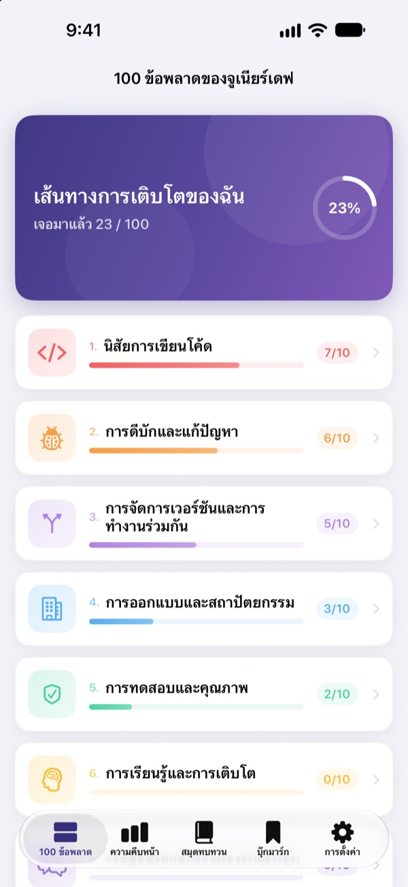
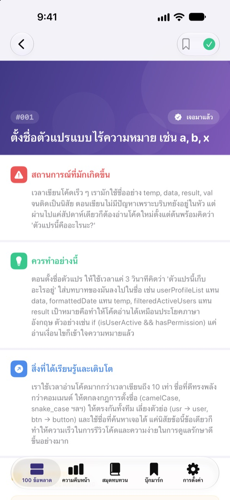
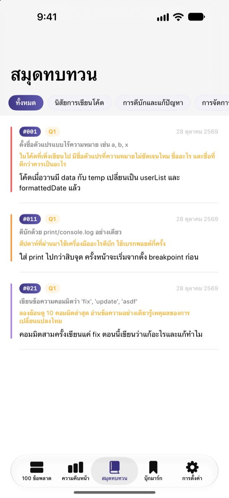
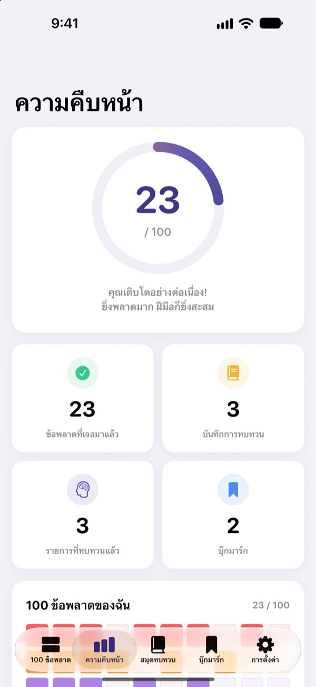

รู้ไว้ก่อน
ก่อนจะเจ็บเอง
รวม 100 ข้อผิดพลาดที่นักพัฒนามือใหม่ทำบ่อยที่สุด แต่ละข้อบอกว่าจะเกิดอะไรขึ้น ควรทำอย่างไร และได้เรียนรู้อะไร จากนั้นตอบคำถามทบทวน เพื่อไม่พลาดเรื่องเดิมซ้ำสอง
30 ข้อแรกใช้ได้ฟรี ใช้ได้บน iPhone, iPad และ Mac

ลองเปิดดูสักข้อ
นี่คือ 10 ข้อในหมวดแรกที่เปิดให้ใช้ฟรี เนื้อหาเหมือนในแอปทุกคำ ข้อไหนเคยเจอแล้ว ลองกด เจอมาแล้ว ดู
โดนคอมเมนต์เรื่องเดิมในโค้ดรีวิวอีกแล้วใช่ไหม
ตั้งชื่อตัวแปรไม่สื่อความหมาย ฟังก์ชันยาว 200 บรรทัด ก๊อปวางโค้ดไปทั่ว รุ่นพี่ทุกคนเคยผ่านมาแล้ว แต่เรามักรู้ตัวก็ตอนพลาดเอง 100 ข้อพลาด พาไปเจอข้อผิดพลาดเหล่านี้ก่อน แล้วให้ทบทวนกับงานของตัวเอง จะได้ไม่พลาดซ้ำ
เกิดอะไรขึ้น ควรทำอย่างไร ได้เรียนรู้อะไร
เปิดข้อผิดพลาดข้อไหนก็จะแบ่งเป็นสามส่วน คือ จะเกิดอะไรขึ้น ควรทำอย่างไร และจะได้เรียนรู้อะไร
มี 10 หมวด ตั้งแต่นิสัยการเขียนโค้ดไปจนถึงความปลอดภัยและประสิทธิภาพ คัดเฉพาะข้อที่เกิดซ้ำในการทำงานจริง

คำถามทบทวน ให้จำได้จริง
แต่ละข้อมีคำถามทบทวน 4 ข้อ รวม 400 ข้อ ตอบโดยนึกถึงโปรเจกต์ของตัวเอง สิ่งที่อ่านจะกลายเป็นประสบการณ์
คำตอบจะรวมอยู่ในสมุดทบทวน แยกตามหมวด กลับมาอ่านได้ทุกเมื่อ

เห็นว่าโตขึ้นแค่ไหนในหน้าเดียว
ติ๊กข้อที่เคยเจอ แล้วความคืบหน้าจะเพิ่มขึ้นทั้งรายหมวดและภาพรวม ข้อไหนอยากกลับมาอ่าน ก็บุ๊กมาร์กไว้
ทุกอย่างซิงก์ผ่าน iCloud ระหว่าง iPhone, iPad และ Mac

เริ่มได้ใน 3 ขั้นตอน
- 1
เลือกหมวด
นิสัยการเขียนโค้ด การดีบักและแก้ปัญหา และการจัดการเวอร์ชันเปิดให้อ่านฟรี
- 2
อ่านแล้วติ๊ก
ข้อไหนเคยพลาดเอง ให้กด เจอมาแล้ว
- 3
ตอบคำถามทบทวน
นึกถึงประสบการณ์ของตัวเอง แล้วเขียนสั้น ๆ ก็ได้ คำตอบจะเก็บไว้ในสมุดทบทวน
10 หมวดที่ครอบคลุม
- นิสัยการเขียนโค้ด
- #001–#010 · ฟรี
- การดีบักและแก้ปัญหา
- #011–#020 · ฟรี
- การจัดการเวอร์ชันและการทำงานร่วมกัน
- #021–#030 · ฟรี
- การออกแบบและสถาปัตยกรรม
- #031–#040 · PRO
- การทดสอบและคุณภาพ
- #041–#050 · PRO
- การเรียนรู้และการเติบโต
- #051–#060 · PRO
- การสื่อสารและการทำงานร่วมกัน
- #061–#070 · PRO
- การดีพลอยและการดูแลระบบ
- #071–#080 · PRO
- ความปลอดภัยและข้อมูล
- #081–#090 · PRO
- ประสิทธิภาพและการปรับแต่ง
- #091–#100 · PRO
แต่ละหมวดมี 10 ข้อ และแต่ละข้อมีคำถามทบทวน 4 ข้อ
30 ข้อฟรี ครบ 100 ข้อด้วย PRO
ฟรี
- 3 หมวดแรก 30 ข้อ
- คำถามทบทวนของข้อเหล่านั้น 120 ข้อ
- ติ๊กข้อที่เคยเจอ สมุดทบทวน ความคืบหน้า และบุ๊กมาร์ก
- ซิงก์ผ่าน iCloud (iPhone, iPad, Mac)
100 ข้อพลาด PRO
- อีก 7 หมวด เพิ่มอีก 70 ข้อ (#031–#100)
- คำถามทบทวนเพิ่มอีก 280 ข้อ
- อัปเดตเนื้อหาทั้งหมดในอนาคต
เลือกได้ทั้งรายเดือน รายปี (ถูกกว่ารายเดือนสูงสุด 50%) หรือซื้อครั้งเดียวใช้ได้ตลอด
ไม่เก็บข้อมูลส่วนตัว ไม่มีเครื่องมือวิเคราะห์ และไม่มีโฆษณา
คำถามที่พบบ่อย
ใช้ฟรีได้แค่ไหน
ใช้ได้ครบทั้ง 30 ข้อพร้อมคำถามทบทวนในหมวดนิสัยการเขียนโค้ด การดีบักและแก้ปัญหา และการจัดการเวอร์ชันและการทำงานร่วมกัน การติ๊ก สมุดทบทวน ความคืบหน้า บุ๊กมาร์ก และการซิงก์ iCloud ก็ฟรีเช่นกัน
ซื้อ PRO แล้วจะใช้บนอุปกรณ์อื่นอย่างไร
ลงชื่อเข้าด้วย Apple ID เดียวกัน แล้วแตะ กู้คืนการซื้อ ในหน้าการสมัครสมาชิก
ยกเลิกการสมัครสมาชิกอย่างไร
ทำได้ทุกเมื่อที่ การตั้งค่า › Apple ID › การสมัครรับ การสมัครจะต่ออายุอัตโนมัติ หากไม่ยกเลิกก่อนสิ้นสุดรอบปัจจุบันอย่างน้อย 24 ชั่วโมง แบบซื้อครั้งเดียวจ่ายแค่ครั้งเดียว
ข้อมูลไม่ซิงก์ระหว่างอุปกรณ์
ตรวจดูว่าทุกอุปกรณ์ลงชื่อเข้า iCloud ด้วย Apple ID เดียวกัน และเปิด iCloud ให้แอปนี้ในการตั้งค่าแล้ว การซิงก์ต้องต่ออินเทอร์เน็ตด้วย
อยากลบข้อมูลทั้งหมด
แตะ รีเซ็ตข้อมูลทั้งหมด ในการตั้งค่าของแอป การติ๊ก คำตอบ และบุ๊กมาร์กจะถูกลบทั้งหมด และกู้คืนไม่ได้
ใช้กับอุปกรณ์ไหนได้บ้าง
iPhone, iPad และ Mac และ PRO จะปลดล็อกบนทุกอุปกรณ์ที่ใช้ Apple ID เดียวกัน
ข้อมูลของฉันถูกส่งไปที่ไหนไหม
ไม่ การติ๊กและคำตอบเก็บไว้แค่ในอุปกรณ์และ iCloud ของคุณเอง แอปไม่เก็บข้อมูลส่วนตัว ไม่มีเครื่องมือวิเคราะห์ และไม่มีโฆษณา
มีคำถามหรือข้อเสนอแนะ ส่งอีเมลมาที่ leeo@kakao.com ได้เลย